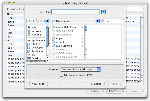
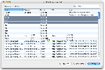
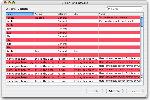

What's New in CiphSafe 1.3
Several by-popular-request items have been added to CiphSafe for 1.3.
Export
|
|

|
The ability to export comma-separated value (CSV) and XML files
has been added. Now you can get data out of CiphSafe whenever
needed.
 Exporting
Exporting
|
Drag and drop handles moving and copying
|
|

|
Prior versions only did a copy when dragging entries. Now,
per the Mac OS standard key combination of Command to move or
Option to copy, entries can be moved or copied as needed. Note
that moving only works between CiphSafe documents, you can
only copy to other applications.
Drag and drop
|
Alternate row color is selectable
|
|

|
The main view of entries has had the alternating color option
for some time, but 1.3 now allows the alternate color to be
changed in case the standard light blue is too boring. (Yes,
bright red is really ugly for this.)
|
Additional new features
|
|
Some other, minor features include:
-
Searching—With Mac OS X 10.3, the rounded search field became
available to non-Apple developers; hence CiphSafe now uses
one instead of the uglier set of pop-up menu, rounded text
field, and reset button. The option of searching all
fields is now also available.
-
Help—CiphSafe's help has been moved to the
task-based style popular with Apple's apps, as well as vastly expanded.
Thanks to
Andy Matuschak for the documentation and toolkit.
-
Main window—the spacebar, when the main table has
focus, now pages down.
-
Links—Point things to
SourceForge instead of withay.com.
-
Preferences—The "warn on short passphrase" has been
removed, CiphSafe will now always warn when it's short.
-
File Saving—Older version of CiphSafe didn't do anything
with the saved file's permission, which resulted in them being
readable to anyone else on the computer. Version 1.3 now makes sure
they are saved as readable only to the owner.
-
File Opening—Previously, if you had an auto-open document
selected and started CiphSafe by either double-clicking or dragging
a document, CiphSafe would open that as well as the auto-open
document. Now, the auto-open is not opened when another document is requested.
-
Entry Contextual Menu—The contextual menu (via right- or Ctrl-clicking)
for entries now disables any options for fields which are not present in the
given entry.
-
Quitting—An issue where having changes in a change window then quitting
CiphSafe would not warn about unsaved changes has been fixed.
-
Performance—Performance for really large documents containing complicated
notes fields has been improved.
-
Code—Not something the average user will see, but a number
of changes at the source level have been made to improve
things.
|